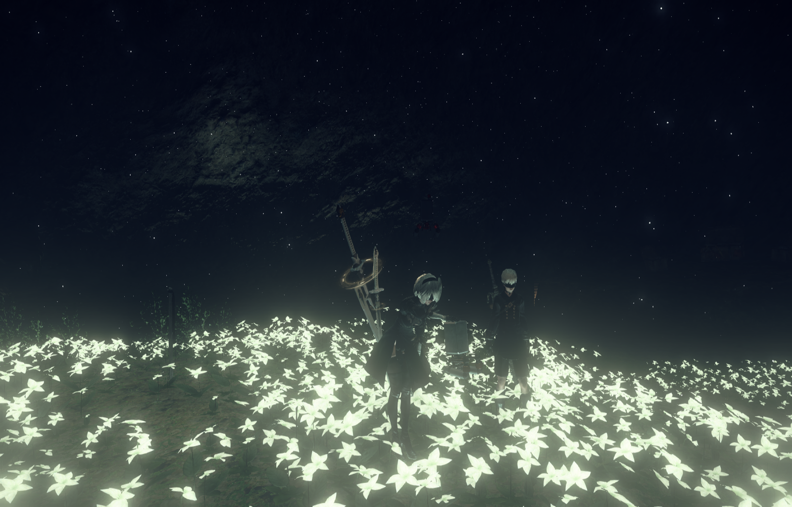

This page is designated to present my open source projects
MrMoonshine.github.io

This page serves as a brief overview of my Github Projects
The list below shows some of my favourite project types that i commonly use for my projects
Scala Projects
Microcontrollers
ESP-IDF Projects
Std C++
Qt5 Projects
I wanted to create the UI of NieR:Automata in the browser.
It's still not finished yet and there are much more things to do.
Minetest Mods
Minetest is a open-source clone of Minecraft.
Modding is in Minetest much easier. And I did one.
Atmel SAM CMSIS
CMSIS refers to the bare-metal programming of
Atmel's ARM processors (ATSAM). CMSIS programming is basically just
shifting 32-bit values into registers and hope that it works as intended.
In my projects i used an ATSAM4S16C.
Animationtester
The Animationtester is a tool that i wrote to verify my 2D animations.
You can alter the frequency to see which framreate suits your animation most.
It uses Qt5 and runs on linux.
The pallete of the widgets has been tweaked to fit perfectly into the Ubuntu Yaru theme.